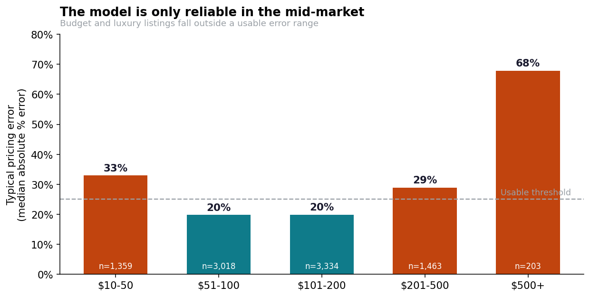
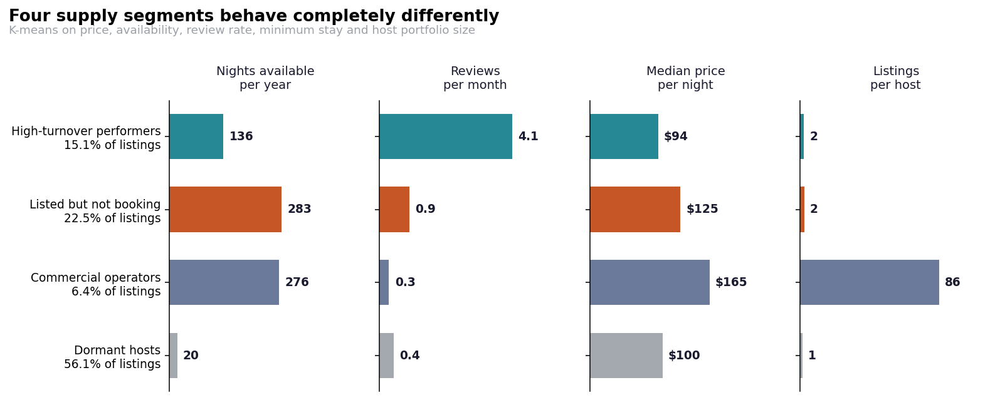
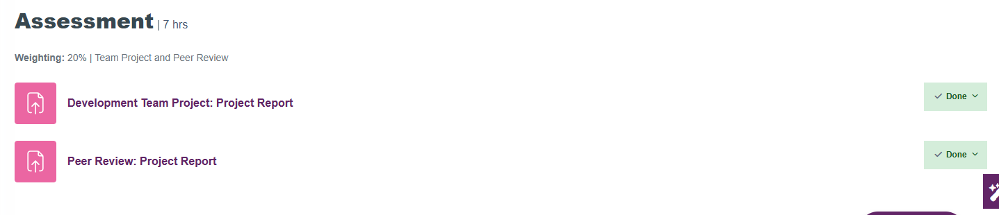

Section 02 · Unit 6
Team Project
The team project completed in Unit 6, with the team's meeting notes and evidence of my individual contribution.
Project Overview
Project Brief
Our team (Group 5) produced Airbnb NYC Business Analysis: Price Prediction and Supply Segmentation, using the New York City Airbnb Open Data (Dgomonov, 2019): 48,895 listings, or 48,870 after removing zero-price listings and leases of more than a year. We asked what drives listing prices, whether price can be predicted accurately enough to advise hosts, and which supply segments Airbnb should prioritise.
Methods, Tools & Technologies
We engineered four features (such as days since the last review, calculated from a fixed date to avoid data leakage), log-transformed the price, and used an 80/20 train–test split with three-fold grid search. We compared linear regression, random forest (Breiman, 2001) and XGBoost (Chen and Guestrin, 2016), then used k-means to segment the listings. The silhouette score favoured two clusters, but we chose four for interpretability and reported this as a judgement call rather than a statistical optimum.
Findings & Recommendation
Model Performance
| Model (test set) | R² | Median error | Within ±20% |
|---|---|---|---|
| XGBoost (tuned) | 0.623 | 23.4% | 44.0% |
| Random forest (tuned) | 0.608 | 23.5% | 43.1% |
| Linear regression (baseline) | 0.501 | 28.4% | 36.8% |
Accuracy was acceptable only for listings priced $51–$200. The model pulled very cheap and very expensive listings toward the market centre, with a median error of 67.8% above $500.
Segments and Recommendation
K-means identified four supply segments; the largest, “dormant hosts”, made up 56.1% of listings. We recommended a scoped pilot rather than a pricing product: a price-alert tool for “listed but not booking” hosts in the $51–$200 range, where the model was reliable.
Limitations we reported: the data is a 2019 snapshot with no time dimension, it predates New York’s Local Law 18 on short-term rentals, and it holds no guest records, so availability was only a proxy for demand.


My Contribution
My Role
My role in the team and the parts of the project I was responsible for.
Team Collaboration Process
How the team organised the work, communicated and made decisions.
Skills Demonstrated
- Feature engineering that avoids data leakage, using a fixed reference date
- Comparing and tuning regression models (linear regression, random forest, XGBoost) with grid search
- Error analysis by price band to show where a model can and cannot be trusted
- Customer and supply segmentation with k-means, and reporting the choice of k as a judgement call
- Turning technical results into a scoped business recommendation with stated limitations
- Producing a joint report as a member of a virtual team

Tutor Feedback
Strengths
- “The report presents a clear business question and attempts to connect price prediction with supply segmentation.”
- “The methodology is explained clearly, covering data cleaning, feature engineering, regression modelling, and clustering.”
- “Several machine learning models were compared, and performance metrics were presented clearly.”
Areas to Improve
- “The submission does not clearly identify the individual team members.”
- “The clustering analysis identifies four segments, but the discussion of these segments remains relatively descriptive.”
- “Several conclusions are based on model outputs without sufficient critical discussion of model limitations and assumptions.”
“Overall, the technical work is acceptable, but stronger business analysis, deeper critical discussion, and clearer strategic recommendations are needed to achieve a higher mark.”
I acted on the point about descriptive segments in the Unit 6 seminar tasks, where I tested whether clusters were stable and meaningful rather than only describing their averages.
Team Meeting Notes
Meetings
Date, attendees, decisions and actions agreed at each team meeting.
Meeting notes and screenshots.